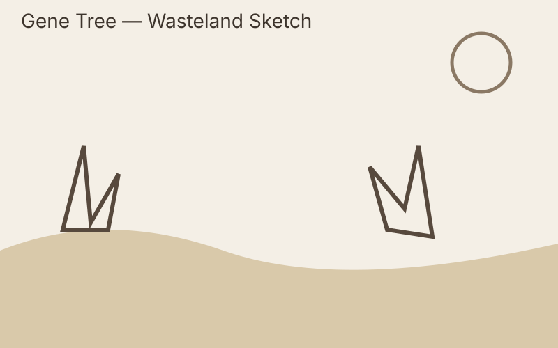
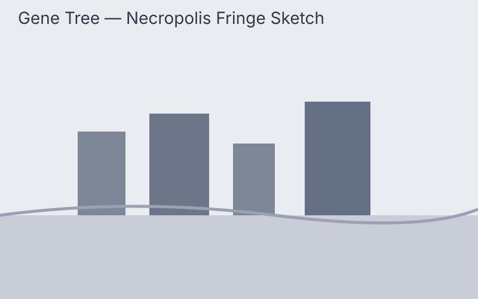
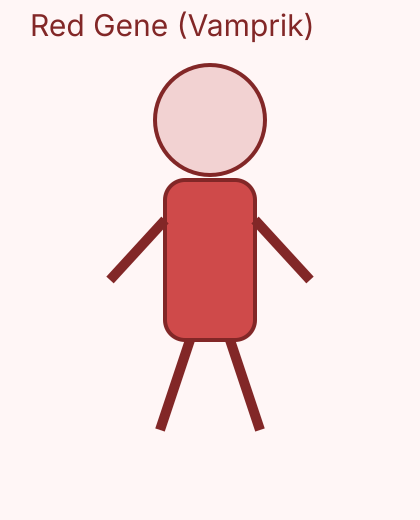
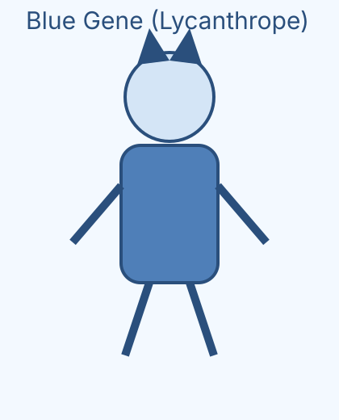
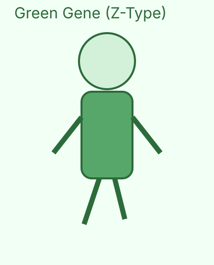

Gene Tree MMO: New Online Survival RPG Prototype
Date: 3 April 2026
We have launched a new prototype lane: Gene Tree MMO — an online survival RPG set in a post-collapse world where factions compete for scarce viable human vessels.
Core prototype loop
- Body Hopping: players inhabit bodies with intact head + torso only.
- Gne Economy: bodies have value based on degradation level.
- Gene Classes: Red, Blue, and Green lineages with unique restrictions + skills.
- Incorporeal Decay: outside-body state drains gne over time.
Visual sketches (prototype mood)
These are first-pass concept sketches for world/character communication with builders.





What happens next
We are building a Codex-ready prototype pack first: game rules, backend model spec, API contract, test scenarios, and playable baseline loop.
Follow project progress in our updates as we move from prototype to internal playable build.